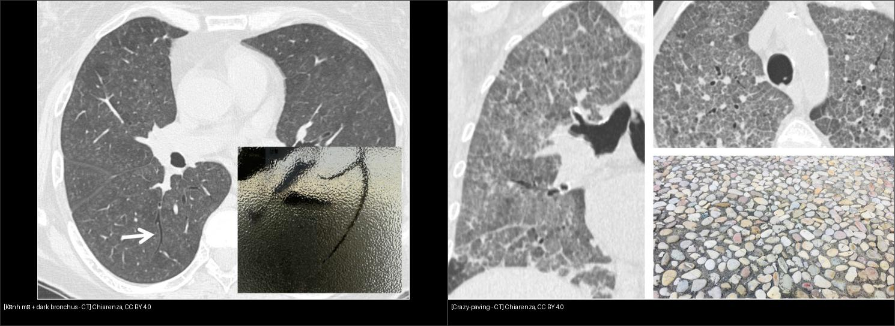
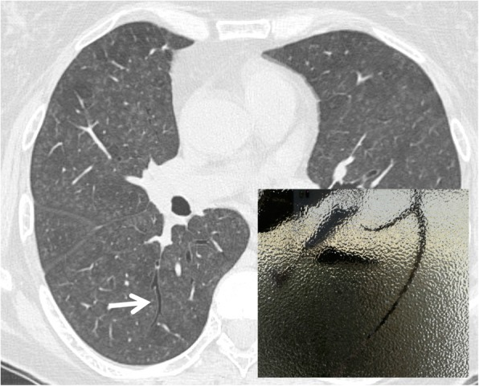
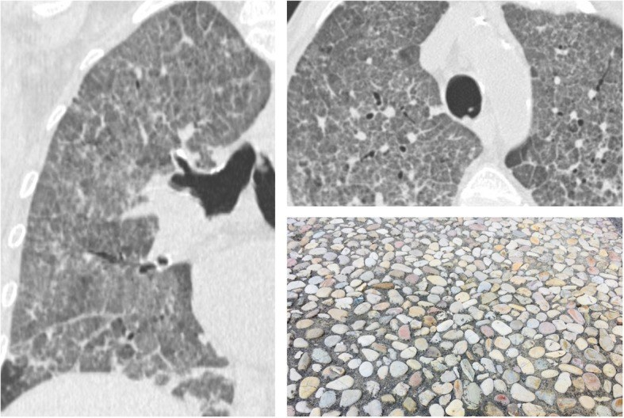

032 — Kính mờ & lát đá / Ground-glass opacity & Crazy-paving
Tags: pattern:kinh-mo vung:phoi protocol:HRCT
Mức chắc chắn (certainty): tổng hợp y văn (literature synthesis) — nhóm tự biên từ y văn mở, chưa gắn ca nguyên văn đơn lẻ.
1. Tổng quan — kính mờ là lấp một phần, lát đá là hai lớp chồng nhau
- Kính mờ (GGO): tăng đậm độ nhưng còn thấy mạch-phế quản = lấp một phần nang / dày kẽ nhẹ / tăng tưới máu. TẠI SAO còn thấy mạch: nang vẫn còn khí một phần.
- Lát đá (crazy-paving): kính mờ + lưới dày vách liên + trong tiểu thùy chồng lên = 2 lớp bệnh (nang + kẽ). Gốc: protein phế nang (PAP), sau mở rộng: PJP, ARDS, xuất huyết, lepidic adeno, NSIP.
- Dark bronchus: PQ đen hơn nền kính mờ quanh — kính mờ quá nhẹ/lan tỏa không nhận ra nếu thiếu vùng phổi lành đối chiếu.

Trái: kính mờ + dark bronchus. Phải: lát đá (kính mờ + lưới vách). Nguồn: Chiarenza et al., CC BY 4.0. Ảnh ghép letterbox.2. Gamut kính mờ theo cấp/mạn + phân bố
- Cấp lan tỏa: phù (tim to, Kerley — bài 033), ARDS (ngoại vi, tim thường), xuất huyết (ho máu), virus/PJP (suy giảm miễn dịch).
- Bán cấp khu trú: COP (vành ngược — bài 031), HP (bẫy khí thở ra), xuất huyết khu trú.
- Mạn: NSIP (đối xứng + chừa màng phổi — bài 035), DIP/RB (hút thuốc, trên), lepidic adeno (tồn tại, nhân đặc tăng dần — bài 020).
3. Bảng so sánh
| Thực thể (entity) | Hình ảnh điển hình (HRCT) | Chốt vào (rule-in) | Chốt loại (rule-out) | Gợi ý xác nhận |
|---|---|---|---|---|
| PJP | Kính mờ lan tỏa + dark bronchus, suy giảm miễn dịch, ít dịch/hạch | Kính mờ đều + suy giảm MD + LDH tăng | Tim to + Kerley → phù tim | PCR/IF đờm, cotrimoxazole |
| Protein phế nang | Lát đá lan tỏa đối xứng (kinh điển) | Lát đá đều + sữa rửa PQ | Lệch + cấp tính → ARDS/xuất huyết | Rửa PQ (milky), anti-GM-CSF |
| ARDS/xuất huyết | Kính mờ/đông đặc ngoại vi + phụ thuộc, cấp | Ho máu + Hb giảm / P/F giảm | Đối xứng đều + mạn → PAP/NSIP | (nối bài 033) |
| NSIP/lepidic | Kính mờ tồn tại + chừa màng phổi / nhân đặc tăng dần | Tồn tại > 3 tháng + bối cảnh mô liên kết/u | Tan nhanh → viêm/phù cấp | (nối bài 035/020) |
4. Protocol HRCT kính mờ
- Lát mỏng 1–1,5 mm + prone (loại xẹp đáy giả) + thở ra (bẫy khí HP).
- Kính mờ tồn tại > 3 tháng → theo dõi nhân đặc (lepidic) + hội chẩn mô liên kết.
- Nghi PAP: rửa phế quản nang (BAL sữa) + anti-GM-CSF.
5. Cạm bẫy
- Xẹp đáy do thở kém giả kính mờ — prone xác nhận (xem bài 035).
- Kính mờ lan tỏa nhẹ không nhận ra nếu thiếu phổi lành — tìm dark bronchus.
- Lát đá ≠ PAP duy nhất — ARDS/PJP/xuất huyết đều có; bối cảnh + cấp/mạn quyết định.
6. Tự lượng giá — Blind Quiz
Ca 1 — Suy giảm miễn dịch, khó thở tăng dần:

- Hỏi: PQ đen hơn nền là dấu gì? Kính mờ lan tỏa + không dịch/hạch → nghĩ gì đầu?
Bấm để hiện đáp án
- Dark bronchus trong kính mờ lan tỏa — PJP: kính mờ đều + suy giảm miễn dịch + ít hạch/dịch.
- Nguồn: Chiarenza et al., Fig. 8, CC BY 4.0.
Ca 2 — Kính mờ + lưới vách chồng nhau lan tỏa:

Bấm để hiện đáp án
- Crazy-paving: kính mờ + dày vách — kinh điển protein phế nang; cấp tính nghĩ ARDS/PJP/xuất huyết theo bối cảnh.
- Nguồn: Chiarenza et al., Fig. 6, CC BY 4.0.
Bài liên quan chéo
- 001 – Tổng quan hệ Ngực
- 031 – Viêm phổi mẫu hình (COP, PJP)
- 033 – Phù phổi & ARDS (kính mờ cấp)
- 035 – Xơ mô kẽ UIP vs NSIP (kính mờ mạn)
Không dùng để chẩn đoán độc lập khi chưa có người hướng dẫn.